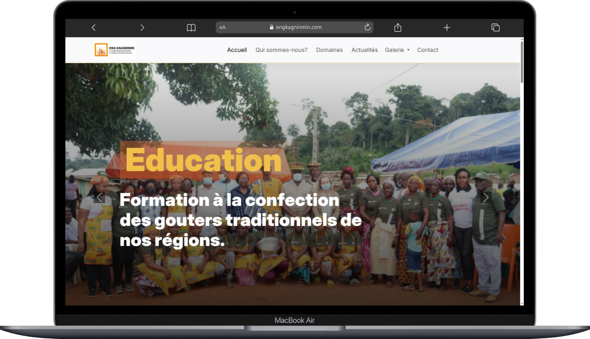

J'ai conçu et développé le site internet de l'ONG KAGNINMIN, une organisation ivoirienne oeuvrant les domaines de la culture, de l'éducation des femmes et jeunes filles, et de la solidarité.
Ce projet m'a permis de mettre en pratique une architecture Symfony solide, tout en repondant à un besoin réel d'une organisation à impact social et culturel en Côte d'Ivoire.